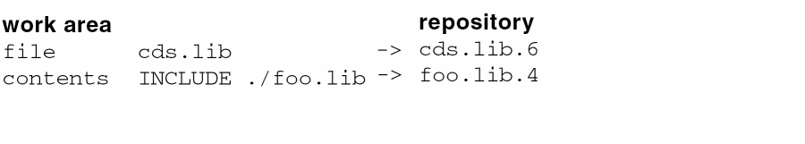

5
Cadence Library Definition File
A library definition file is used in Cadence software to define libraries. A library definition file maps library names to physical directory paths. Applications read this file to identify the libraries that they can use. Virtuoso Studio uses the cds.lib file as its library definition file.
The cds.lib file is an ASCII file used to define libraries. The file maps user library names to physical directory paths.
Applications read the cds.lib file to identify the libraries they can use. Usually, one cds.lib file, which might reference other files, determines which libraries are available to your application. Other cds.lib files can be included in the cds.lib file with the INCLUDE and SOFTINCLUDE statements. This allows you to customize the cds.lib files for specific projects or at different levels such as the site, group, or user level.
The Cadence search mechanism (CSF) is used to find the correct cds.lib file for your software. The first cds.lib file that is found is used.
# The DEFINE statement defines library references.
DEFINE ttl /users/$USER/ttl
# The SOFTDEFINE statement is similar to DEFINE but doesn’t print errors.
SOFTDEFINE myDesign /users/$USER/parts
# The INCLUDE statement reads a file.
INCLUDE /users/$USER/cds.lib
# The SOFTINCLUDE statement is similar to INCLUDE but doesn’t print errors.
SOFTINCLUDE $GOLDEN/cds.lib
# The UNDEFINE statement undefines the iclib library.
UNDEFINE iclib
DEFINE iclib ./ic_lib
The cds.lib File Location
Cadence provides a default cds.lib file in the your_install_dir/share/cdssetup directory. In addition, applications might create a cds.lib file in other directories such as your current working directory when you create a new library. You can also create a cds.lib file in any directory listed in the setup.loc file.
Multiple cds.lib Files
You can have multiple cds.lib files.Use the INCLUDE statement to include them in the primary cds.lib file. The primary file must be named cds.lib because that is the name the system searches for by default. Included files do not need to be named cds.lib.
You can have a user cds.lib file that contains library settings used to support all your projects. You can also have project-wide or local cds.lib files located in specific design directories that contain library settings specific to each project, such as technology or cell libraries. These can be combined in many ways with the
Related Topics
Cadence Setup Search File: setup.loc
Creating or Editing a cds.lib File
cds.lib File Statements
The categorisation of the cds.lib file statement is divided into a keyword, a valid library name, and the library location. For example,
Use the following statements in a cds.lib file:
| Statement | Description |
|---|---|
|
Defines lib as the logical reference to the directory specified as pathToLib. The same directory cannot be contained in multiple library definitions. An error message is printed if pathToLib does not exist.
|
|
|
Same as the |
|
|
Undefines the specified library. This command is useful for removing any libraries that were defined in other files. It is not an error if lib was not previously defined. |
|
|
Reads the specified file as a
The following example reads the |
|
|
Same as the
The following example reads the |
|
|
Assigns the specified attribute to a library. The library must already be defined; an error message is printed if the library has not been defined when the |
|
|
Currently, you can use the attributes listed below with an ASSIGN libName TMP TempDirPath It defines the temporary directory for a library. libName is the library to which you want to assign a temporary directory and TempDirPath is the path to the temporary directory.
ASSIGN AllLibs TmpRootDir TmpRootDirPath It defines the global temporary directory for all libraries. TmpRootDirPath is the path to the root of the temporary directory.
In this case, if you have a library
The A library can have only one temporary directory. Temporary directories contain only derived data; they cannot contain source data. Applications read both the library and its temporary directory to get library data; if there are any files in common, the files in the temporary directory have precedence. Applications write source data to the library and derived data to the temporary directory. For more information about temporary directories, see Cadence Library Structure |
|
|
ASSIGN libName DISPLAY displayAttributeName
It sets the specified attribute on the library. The
in your ASSIGN combinedLibName COMBINE libA libB ... It defines a combined library, which is a set of libraries that are displayed together as a composite library in the Library Manager. combinedLibName is the name of the combined library and libA and libB are the libraries that comprise the combined library.
The
Use the |
|
|
Removes the specified attribute from the library. The library must already be defined. No error message is printed if the attribute does not exist on the library. |
|
Related Topics
Installation Root Expressions
You can use the following expressions in cds.lib file statements to refer to the root of the Cadence installation hierarchies.
However, when using the same cds.lib in the NC-Verilog environment, “THIS_TOOL” proves to be a wrong specification. You can use the following variant if you want the hierarchy with Virtuoso in it:
$(inst_root_with:tools/dfII/bin/virtuoso)/tools/dfII/etc/cdsDefTechLib
Moreover, using this variant you are sure to point to the right installation root, which is independent of the tool flow/environment that you are using.
Related Topics
Syntax and File Format of cds.lib
The following rules apply to the cds.lib file:
- Only one statement is allowed per line.
- Blank lines are allowed.
-
Use the pound sign (
#) or the double hyphen (--) to begin a comment. For example:# this is a single line comment -- this is a single line comment
You must precede and end the comment character with a blank space, a tab, or a new line. - Keywords are identified as the first non-whitespace string on a line.
- Keywords are case insensitive.
- Directory and file names cannot contain shell wildcards, such as an asterisk ( * ) or a question mark ( ? ).
-
You can include environment variables such as
$HOMEor shell-style home directory references such as~and~user. Symbolic variables and library paths are in the file system name space. -
You can enter either absolute or relative file paths.
Relative paths are relative to the location of the currentcds.libfile being read. Use of absolute paths with design management systems might cause problems in large team environments. - Logical library names are always in the LibraryUnix name space and are case sensitive both on UNIX and Windows.
-
Any reference to
.means the directory that was represented by the path used to find thecds.libfile. If you are in a work area that has a symbolic link to acds.libfile, refers to the directory that the originalcds.libfile is in. For example:
Related Topics
Library Definitions in Virtuoso Applications Using the cds.lib Files
Creating or Editing a cds.lib File
You can create and update the cds.lib file using one of the following editors:
-
Cadence Library Path Editor
Many Cadence applications include the Library Path Editor. -
Any text editor
The New Library form from the Command Interpreter Window or the Cadence Library Manager (Virtuoso users only) includes a text editor. When you create a new library, a newcds.libfile is created or the existing file is updated. Creating a new or temporary library inside of an existing library is not allowed as any directories found inside the library are considered as cells.
Using the Cadence Library Path Editor to Create or Edit the cds.lib File
To start the Cadence Library Path Editor,
-
In a shell window, type
cdsLibEditor. To use a namespace other than the default CDBA namespace, use the-namespaceoption with the command. For example:
cdsLibEditor -namespace VHDL
For a list of Cadence name spaces, see Name Mapping
Using a Text Editor to Create or Edit the cds.lib File
To create a new cds.lib file or to edit your cds.lib file to add libraries or include other cds.lib files,
-
To create a new
cds.libfile, create an ASCII file namedcds.libin any directory that is listed in yoursetup.locfile, for example,$HOME.
The search order specified in thesetup.locfile determines whichcds.libfile will be used. -
To edit a
cds.libfile, open the file in a text editor. -
To add a library, add the following statement:
DEFINE
For example:logicalNameForLibpathToLibDEFINE myLib ../libs/designLib
-
To include another
cds.libfile in your file, add the following statement:INCLUDE
For example:path_to_fileINCLUDE /net/cds/user/libs/samples/cds.lib
After making the changes, save the cds.lib file.
Related Topics
Mapping Library Names
Library names in a cds.lib file are in the LibraryUnix name space. Applications map these names to their own name space. This enables all applications to share library definitions because they always interpret the library names in a cds.lib file in the LibraryUnix name space.
If you add a library definition to the cds.lib file with a text editor (instead of through an application), you must specify the logical library name in the LibraryUnix name space. You can use the nmp command to determine the name to include in the cds.lib file.
-
Type the following in a UNIX shell:
nmp mapName
When you specify libName, you need to escape names that contain special characters. For example, to use the library namedappNamespaceLibraryUnix libName!Lib!in Verilog, you need to escape the exclamation mark ( ! ) with a backslash, because the exclamation mark requires an escaped names So, you would use the escaped name\!Lib! .
.
You also need to enclose names with special characters in single quotes so that the shell does not delete the special characters. Also, in some shells, you might need to escape the backslash that is part of the escaped name with another backslash.
For example, to determine the mapped LibraryUnix name for Verilog \!Lib!
,
-
In a
shshell, type:nmp mapName Verilog LibraryUnix
– or –’\!Lib!
In acshshell, type:nmp mapName Verilog LibraryUnix
’\\!Lib!
#21Lib#21
Use the mapped name (#21Lib#21) in the cds.lib file.
You can avoid name mapping issues by always choosing names that use only lowercase letters and digits.
Related Topics
The cdsLibDebug Command
The cdsLibDebug command is a testing and debugging tool for cds.lib files. It is located in your_install_dir/tools/bin.
The cdsLibDebug command is only available with Virtuoso applications.
You can use cdsLibDebug to do the following:
-
Get a list of
cds.libfiles that are found by the search mechanism.
cdsLibDebuglists thecds.libfile found, as well as any othercds.libfiles that are included (with theINCLUDEstatement) in thatcds.libfile.
These are thecds.libfiles that your Cadence application will read.
IfcdsLibDebugcannot find anycds.libfile, it displays the following error:*WARNING* ddUpdateLibList: Did not find any ’cds.lib’ file.
-
Get a list of library definitions that have been set in the
cds.libfiles.
cdsLibDebuglists the logical name and physical path of each library and identifies thecds.libfile in which it was found.
These are the libraries that your Cadence application will access. -
Find syntax errors in
cds.libfiles.
cdsLibDebugreports errors such as an undefined variable or an invalid library path. It also reports a warning if the same library name is mapped to different paths.
Syntax
cdsLibDebug [-cdslib cdslib] [-cla] [-help]
Examples
In the following example, cdsLibDebug finds the cds.lib file in the current working directory (/mnt3/WorkDir), which includes another cds.lib file (/mnt3/WorkDir/HierEditor/cds.lib), which in turn includes another file (/mnt3/WorkDir/Test/liblist). cdsLibDebug lists all the libraries that are defined in these cds.lib files. It also prints warnings for an undefined environment variable, $VAR, as well as for an invalid library path for the library MonitorTestLib.
-
Output of cdsLibDebug with the
-claoption% cdsLibDebug -cla
Parsing cdslib file ./cds.lib.
Warning: Invalid environment variable $VAR on line 5 of /mnt3/WorkDir/cds.lib Warning: Invalid path /mnt3/WorkDir/MonitorTestLib on line 7 of /mnt3/WorkDir/cds.lib
cds.lib files: 1: /mnt3/WorkDir/cds.lib 2: /mnt3/WorkDir/HierEditor/cds.lib included on line 2 of /mnt3/WorkDir/cds.lib 3: /mnt3/WorkDir/Test/liblist included on line 1 of /mnt3/WorkDir/HierEditor/cds.lib
Libraries defined:
Defined in /mnt3/WorkDir/Test/liblist: Line # Filesys Path ------ ---- ---- 1 NEW /mnt3/WorkDir/Test/NEW
Defined in /mnt3/WorkDir/HierEditor/cds.lib: Line # Filesys Path ------ ---- ---- 2 mixSigLib /mnt3/WorkDir/HierEditor/mixSigLib 3 myTempLib /mnt3/WorkDir/HierEditor/myTempLib 4 myDestLib /mnt3/WorkDir/HierEditor/myDestLib 5 SourceLib /mnt3/WorkDir/HierEditor/SourceLib
Defined in /mnt3/WorkDir/cds.lib: Line # Filesys Path ------ ---- ---- 3 mylib /mnt3/WorkDir/mylib 4 myTestLib /mnt3/WorkDir/myTestLib 6 myLibCopy /mnt3/WorkDir/myLibCopy
-
Output of
cdsLibDebugwithout the-claoption:% cdsLibDebug
*WARNING* The directory: ’/mnt3/WorkDir/$VAR/Lib2’ does not exist but was defined in libFile ’/mnt3/WorkDir/cds.lib’ for Lib ’LIB2’.
*WARNING* The directory: ’/mnt3/WorkDir/MonitorTestLib’ does not exist but was defined in libFile ’/mnt3/WorkDir/cds.lib’ for Lib ’MonitorTestLib’.
Lib Files: 1: /mnt3/WorkDir/cds.lib 2: /mnt3/WorkDir/HierEditor/cds.lib 3: /mnt3/WorkDir/Test/liblist 4: internal_implicit
Libraries defined: 1: mylib from file /mnt3/WorkDir/cds.lib (refCount 1). Path: /mnt3/WorkDir/mylib 2: NEW from file /mnt3/WorkDir/Test/liblist (refCount 1). Path: /mnt3/WorkDir/Test/NEW 3: SourceLib from file /mnt3/WorkDir/HierEditor/cds.lib (refCount 1). Path: /mnt3/WorkDir/HierEditor/SourceLib 4: mixSigLib from file /mnt3/WorkDir/HierEditor/cds.lib (refCount 1). Path: /mnt3/WorkDir/HierEditor/mixSigLib 5: myLibCopy from file /mnt3/WorkDir/cds.lib (refCount 1). Path: /mnt3/WorkDir/myLibCopy 6: cdsDefTechLib from file internal_implicit (refCount 1). Path: /net/machine111/usr1/cadence/tools/dfII/etc/cdsDefTechLib 7: myTempLib from file /mnt3/WorkDir/HierEditor/cds.lib (refCount 1). Path: /mnt3/WorkDir/HierEditor/myTempLib 8: myTestLib from file /mnt3/WorkDir/cds.lib (refCount 1). Path: /mnt3/WorkDir/myTestLib 9: myDestLib from file /mnt3/WorkDir/HierEditor/cds.lib (refCount 1). Path: /mnt3/WorkDir/HierEditor/myDestLib
refCountis the number ofcds.libfiles that contain that library definition.
Related Topics
Creating or Editing a cds.lib File
Library Definitions in Virtuoso Applications Using the cds.lib Files
Virtuoso applications on OpenAccess use the cds.lib files for library definition.
If you create or edit a cds.lib file manually, you must keep it synchronized. You can use the Cadence Library Path Editor to synchronize library definition files.
If a cds.lib file is not found, Virtuoso applications issue a warning.
Virtuoso applications support the cds.lib files in the following way:
-
When you create a library in a Virtuoso application or using a
ddfunction that is a part of the DDPI interface used to access the library structure, aDEFINEstatement is added to thecds.libfile:
If thecds.libfound by the Cadence search mechanism is not in the current working directory, a newcds.libfile is created in the current working directory, with anINCLUDEstatement that includes thecds.libthat was found and aDEFINEstatement for the new library. -
When you delete a library with a Virtuoso application or a
ddfunction, and the library is defined only once in acds.libfile, it is deleted from the file and removed from disk.
Multiple definitions of acds.libcan be found because a library can be defined multiple times in acds.libfile as well as in files that are included in thecds.libfile. -
If Virtuoso applications do not find a
cds.libfile, they issue a warning. Specify absolute path from the working directory to avoid any issues. Specifying relative path from the working directory can result in an error.
Related Topics
Creating or Editing a cds.lib File
Return to top